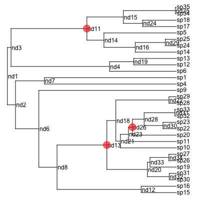

make.bd.split(tree, nodes, split.t, sampling.f=NULL, unresolved=NULL)
ape “phylo” format.nodes (see
Details).sp1=10, sp2=2, would mean that sp1 represents 10
species, while sp2 represents two. These labels must exist
in tree$tip.label and all other tips are assumed to
represent one species.Create a likelihood function for a birth-death model where the tree is partitioned into regions with different parameters.
Branching times can be controlled with the split.t
argument. If this is Inf, split at the base of the branch (as in
MEDUSA). If 0, split at the top (closest to the present, as in
the new option for MEDUSA). If 0 < split.t < Inf then we split
at that time on the tree (zero is the present, with time growing
backwards).
This function is related to MEDUSA (Alfaro et al. 2009), but does not
include any of the code for efficiently moving between different splits
(split creation here is fairly slow). The primary use for this model is
for generating starting points for state dependent split models (e.g.,
make.bisse.split) and testing a priori splits.
set.seed(1) pars <- c(.1, .03) phy <- trees(pars, "bd", max.taxa=30)[[1]] ## Here is the phylogeny: plot(phy, show.node.label=TRUE, label.offset=.1, font=1, cex=.75, no.margin=TRUE)## Construct the plain likelihood function as a benchmark: lik <- make.bd(phy) lik(pars) # -21.74554[1] -21.74554## Split this phylogeny at three points: nd11, nd13 and nd26 nodes <- c("nd11", "nd13", "nd26") ## This is the index in ape's node indexing: nodes.i <- match(nodes, phy$node.label) + length(phy$tip.label) nodelabels(node=nodes.i, pch=19, cex=2, col="#FF000099")
## To make a split likelihood function, pass the node locations and times in: lik.s <- make.bd.split(phy, nodes) ## The parameters must be a list of the same length as the number of ## partitions. Partition '1' is the root partition, and partition i is ## the partition rooted at the node[i-1] pars4 <- rep(pars, 4) names(pars4) <- argnames(lik.s) ## Run the likelihod calculation: lik.s(pars4) # -21.74554[1] -21.74554## These are basically identical (to acceptable tolerance) lik.s(pars4) - lik(pars)[1] 0## You can use the labelled nodes rather than indices: lik.s2 <- make.bd.split(phy, nodes) identical(lik.s(pars4), lik.s2(pars4))[1] TRUE## All the usual ML/MCMC functions work as before: fit <- find.mle(lik.s, pars4)